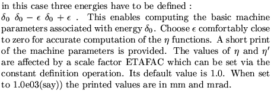
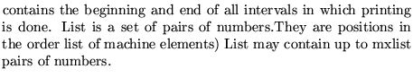

NOTE: no kicks simulating synchrotron oscillation (parameter ) may exist in the lattice. Results are meaningless in the presence of such kicks. For each chosen momentum, particles are generated around the point to compute the elements of the matrix describing the linear motion around the trajectory defined by the point .
Input format
DETAiled chromatic analysis...(up to 80 characters)
nh nv nhv
nener ncoef
mlocat [list]
Parameter definitions
nh
1
0
nv
1
0
nhv
1
2
3

4
5
0
NOTE: the input beam must have been defined previously in a BEAM
MATRIX TRACKING operation.
dx dx' dy dy'
nener
ncoef
mlocat
list

Examples
The first example, taken from demo7, produces a multiple momentum analysis of the beam centroid and beam matrix at the end of the lattice.
The second example, taken from demo9, gives a "short" printout of the beam centroid and the twiss parameters at every point of the lattice, for the on momentum motion.
DETAILED CHROMATIC ANALYSIS 1 1 1 0 0 0 0 0.000001 0.000001 0.000001 0.000001 49.26950355 0 0 0 22.75617615 0 0 0 7 5 0.0 -.001 0.001 -.003 0.003 -.005 0.005 -1, detailed 1 1 2 0 0 0 0 1.0e-06 1.0e-06 1.0e-06 1.0e-06 1.76806 -0.0032 0 0 15.0736 -0.0034 0 0 1 0 0.00 0; stop